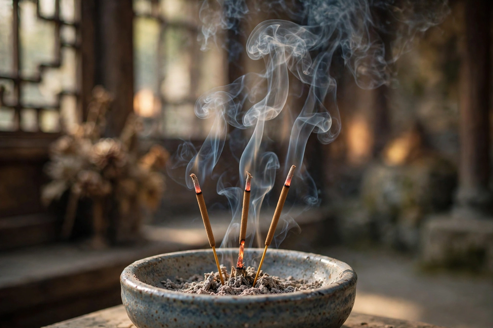

| Incense | |
|---|---|
 | |
| Materials | Frankincense, myrrh, sandalwood, agarwood, camphor, resins, herbs |
| Forms | Sticks, coils, cones, loose resin, powder |
| Uses | Worship, meditation, ceremony, aromatherapy, masking odours |
Incense is an aromatic biotic material that releases fragrant smoke when burned. The term covers a wide range of products made from plant materials — including resins such as frankincense and myrrh, woods such as sandalwood and agarwood, barks, seeds, roots, and flowers — often combined with essential oils. Incense has been used for millennia in religious worship, ritual purification, meditation, and for its fragrance.
The use of incense is ancient. Egyptians burned resins in temple rituals and funerary rites by at least the second millennium BCE, and aromatic substances travelled the Incense Route from Arabia to the Mediterranean. Incense culture flourished in China and India, where it became central to Buddhist, Hindu, Taoist, and Shinto practice, and in Japan it developed into kōdō, the "way of incense", one of the classical arts of refinement. In the Abrahamic traditions, incense featured in Israelite temple worship, and it is used today in Catholic, Orthodox, and some other Christian liturgies, often burned in a thurible.
Direct-burning incense — sticks, coils, and cones — contains a combustible base such as charcoal or wood powder and burns by itself once lit. Indirect-burning incense, such as loose resin grains of frankincense and myrrh, is placed on hot charcoal and does not burn independently.
Incense is offered in Hindu puja, burned before altars in Buddhist temples, and used in Chinese ancestor worship, where sticks are placed before shrines and graves. The Magi of the Nativity story are described in the Gospel of Matthew as bringing frankincense and myrrh as gifts.
Incense smoke contains particulate matter and volatile compounds; heavy indoor use has been studied for possible respiratory effects, though it is also the subject of research into psychoactive constituents such as incensole acetate in frankincense.